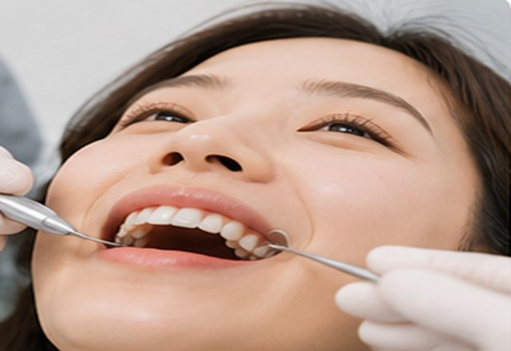
충치·신경치료충치·신경치료
충치의 범위와 치수 상태를 진단해 수복 치료 또는 신경치료(근관치료) 등 치아 보존 방법을 안내합니다.
충치·신경치료, 잇몸·예방, 보철·틀니, 소아 진료 등 다양한 구강 건강 문제를 상담합니다.

충치·신경치료충치의 범위와 치수 상태를 진단해 수복 치료 또는 신경치료(근관치료) 등 치아 보존 방법을 안내합니다.
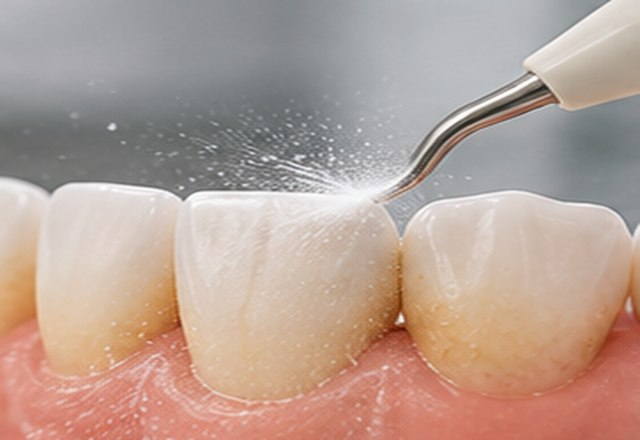
잇몸 치료치주 상태를 평가하고 스케일링·치주치료 및 관리 계획을 안내합니다.
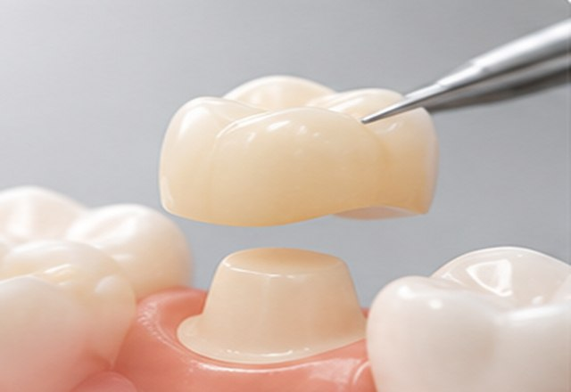
보철 치료크라운·브릿지 등 손상된 치아의 기능 회복을 위한 방법을 설명합니다.
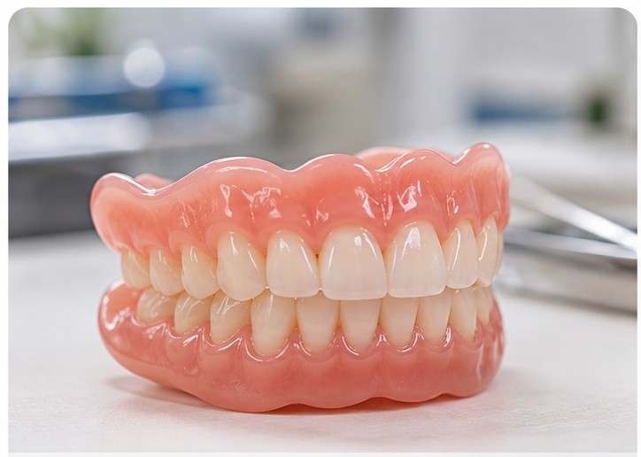
틀니 치료잔존치아·잇몸 상태와 사용 편의성을 고려해 상담합니다.
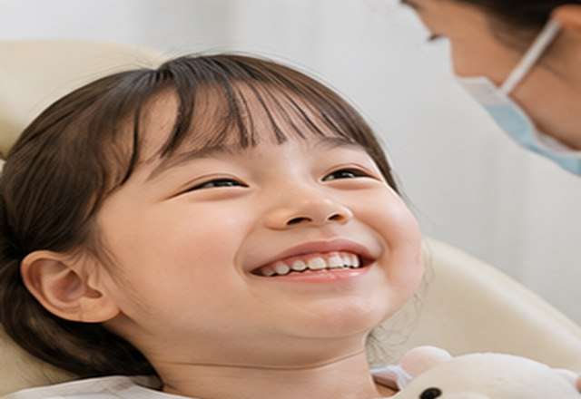
예방·정기검진구강 위생 상태를 확인하고 정기적인 관리 방법을 안내합니다.
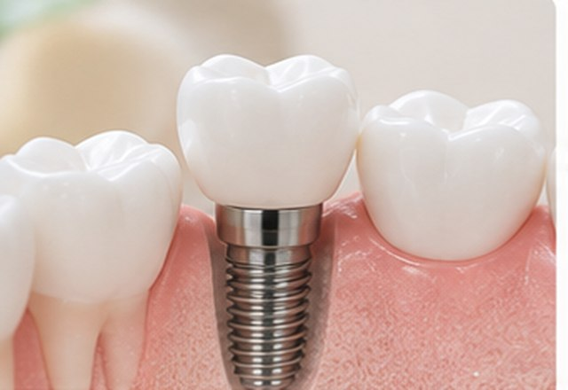
임플란트치아 상실 부위의 뼈와 잇몸 상태를 확인하고 치료 계획을 수립합니다.
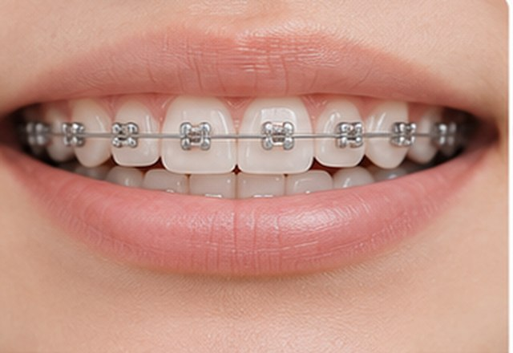
일반 교정치열과 교합 상태를 진단하고 적합한 교정 방법을 상담합니다.
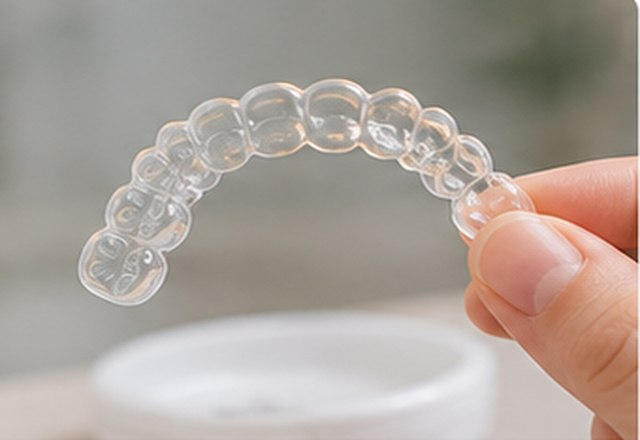
투명교정탈착식 투명교정장치의 적용 가능성과 치료 과정을 안내합니다.
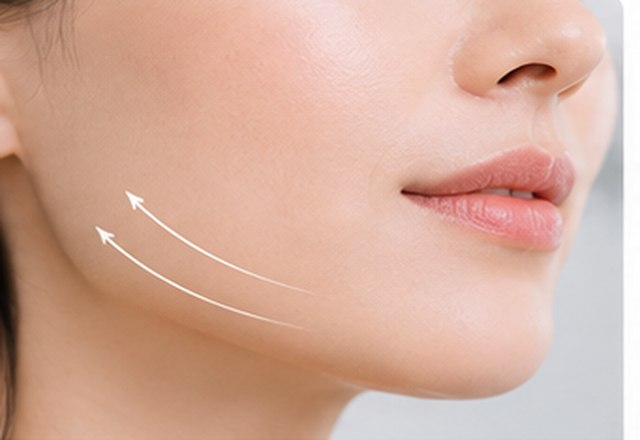
보톡스저작근 상태와 증상을 평가하고 보툴리눔 톡신 치료의 적응증을 상담합니다.
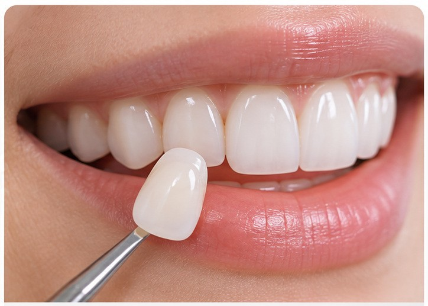
심미치료라미네이트·미백 등 심미적 개선을 위한 방법을 치아 상태에 맞춰 상담합니다.
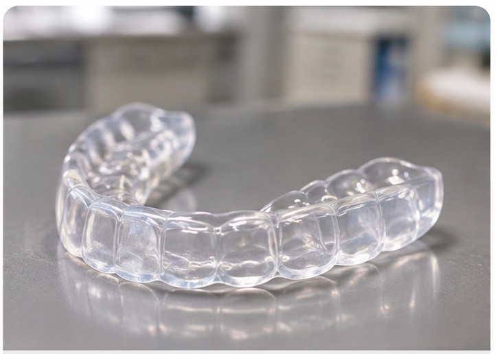
이갈이장치이갈이와 이악물기 증상을 평가하고 치아 보호를 위한 장치 치료를 안내합니다.